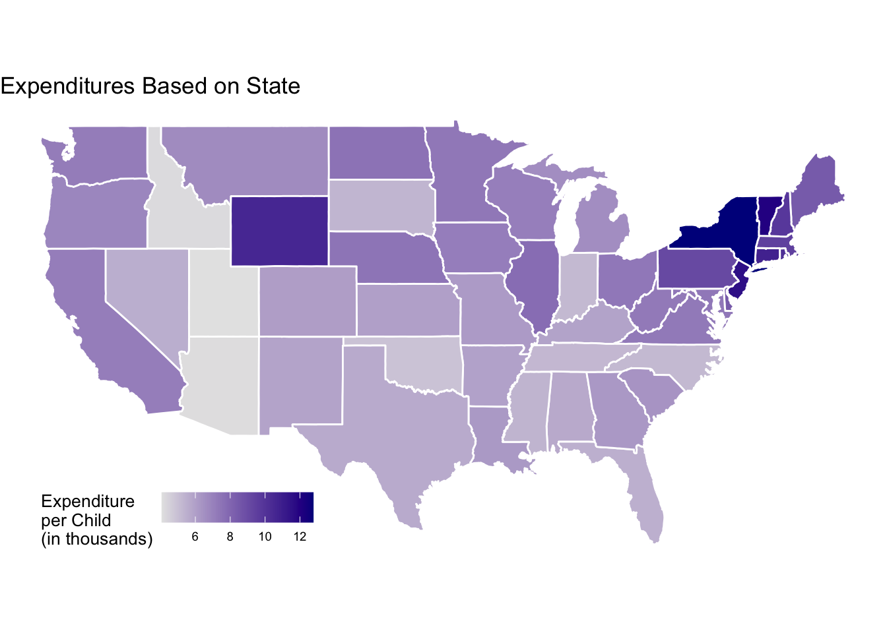
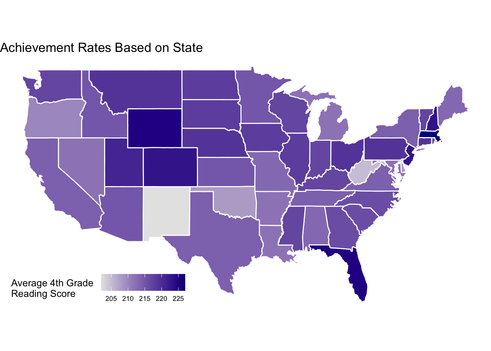

library(tidyverse)
library(maps)Loading Packages and Data
#loading datasets childcare_costs and counties from tidytuesday
#loading dataset childcare_costs
childcare_costs <- read_csv("data/childcare_costs.csv")
#loading dataset counties
counties <- read_csv("data/counties.csv")
#loading dataset expenditures
expenditures <- read_csv("data/kids.csv")
#loading dataset scores
scores <- read_csv("data/scores.csv")
#loading us map
us_states <- map_data("state")Choropleth Maps
Code for us_states from Kieran Healy: https://socviz.co/maps.html#map-u.s.-state-level-data
expenditures_PK12ed <- expenditures |>
mutate(region = str_to_lower(state)) |>
filter(variable == "PK12ed")
us_states_expenditures <- us_states |>
select(-subregion) |>
inner_join(expenditures_PK12ed, join_by(region == region), relationship = "many-to-many")ggplot(us_states_expenditures, aes(x = long, y = lat, group = group, fill = inf_adj_perchild)) +
geom_polygon() +
guides(fill = FALSE) +
theme_void() +
scale_fill_gradient(low = "white", high = "navyblue")Warning: The `<scale>` argument of `guides()` cannot be `FALSE`. Use "none" instead as
of ggplot2 3.3.4.
scores_new <- scores |>
mutate(region = str_to_lower(Jurisdiction), MN = as.numeric(MN))Warning: There was 1 warning in `mutate()`.
ℹ In argument: `MN = as.numeric(MN)`.
Caused by warning:
! NAs introduced by coercionus_states_scores <- us_states |>
select(-subregion) |>
inner_join(scores_new, join_by(region == region), relationship = "many-to-many")
ggplot(us_states_scores, aes(x = long, y = lat, group = group, fill = MN)) +
geom_polygon() +
guides(fill = FALSE) +
theme_void() +
scale_fill_gradient(low = "white", high = "navyblue")
Forward Selection Approach to Linear Regression Model for Predictors of 4th Grade Reading Levels
Literature Review: What factors are most important in predicting elementary academic achievement levels?
Behavioral skills, are influenced by parental monitoring and family stability
- Self-regulation and social competence are two crucial behavioral skills that predict reading level
Language minority students demonstrated more weakness in oral comprehension and vocabulary
Students of both genders from high-poverty households performed significantly worse in alphabet knowledge, phonological awareness, and spelling
High levels of inhibitory control predicts better academic skills in Grade 1
Social problem-solving competence is a strong predictor of academic skills
https://apa.org/pi/ses/resources/publications/education
Low-SES families are less likely to have experiences that encourage the development of critical skills such as phonological awareness, vocabulary, and oral language
Reading competency is associated with number of books owned and parental distress
Teachers’ years of experience and quality of training help predict children’s academic achievements
There is a higher likelihood of children from lower-SES households displaying learning-related behavior problems
A longitudinal study of 370+ working-class families finds that jobs that allow for more autonomy and more supportive supervisors were warmer and more engaged with their children
More intimate parenting styles are associated with early academic achievement in children
Anecdotal evidence indicates that when workers feel more trust and flexibility at work, they are more productive and better able to care for children
https://cepa.stanford.edu/educational-opportunity-monitoring-project/achievement-gaps/race/
A jarring achievement gap amongst students of varying races particularly between white, Black, and Hispanic children
- Likely mediated by differences in the socioeconomic statuses of families
- High-quality childcare has been rigorously shown to lead to better performance in science, technology, engineering, and math through high school
Summarized review: After a review of literature in the field of early academic achievement, we find that various social, psychological, and economic factors have been found to contribute to the development of reading skills in elementary schoolers. Socioeconomic status has been consistently shown to influence academic success, specifically due to differing access to books, supportive services, and qualified teachers as well as due to exposure to adversity and parental distress. The structural connections between race, socioecnomic status, and long-term outcomes makes racial minority status another potential variable of interest. Along with socioeconomic status, parents’ capacity to be highly engaged and warm affects psychological health, which often underpins academic trajectories. Thus, we seek to examine whether having both, one, or no working parents affects reading skills. Finally, it is necessary to explore the role of access to both family-based and center-based child care given the proven significance of high-quality child care.
Cross-referencing research with our data to identify potential factors (most must be created using given variables):
Community poverty level
Percentage of community that belongs to minority racial status
Percent of single-family households Percent of families where both parents work vs. where one parent works
Median cost of family-based childcare
Median cost of center-based childcare
#Family poverty level
childcare_costs <- childcare_costs |>
mutate(family_poverty = pr_f)
#Minority racial status
childcare_costs <- childcare_costs |>
mutate(
minority_racial_status =
one_race_b +
one_race_i +
one_race_a +
one_race_h +
one_race_other +
two_races
)
#Percentage of single-mother households
childcare_costs <- childcare_costs |>
mutate(
percentage_single_mother =
h_under6_single_m / households
)
#Ratio of one-parent-working to two-parent-working households
childcare_costs <- childcare_costs |>
mutate(
ratio_of_both_to_one =
(h_under6_f_work + h_under6_m_work)/h_under6_both_work
)
#Cost of center-based child care
childcare_costs <- childcare_costs |>
mutate(
average_center_child_care =
(mc_infant + mc_toddler + mc_preschool)/3
)
#Cost of family-based child care |>
childcare_costs <- childcare_costs |>
mutate(
average_family_child_care =
(mfcc_infant + mfcc_toddler + mfcc_preschool)/3
)